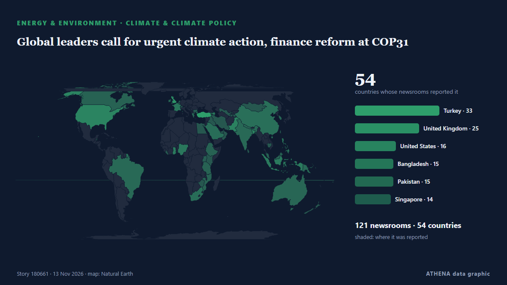

Ενέργεια, Πόροι & Περιβάλλον
ΧορηγούμενοΠαρουσιάζεται από  Cybernetics and Artificial Intelligence Lab Welcome to the Cybernetics and Artificial Intelligence Laboratory, established at the Department of Business Administration of the National and Kapodistrian University of Athens. The lab is headed by Professor Dimitrios Thomakos. The lab aims to do research that can be published in top venues. Our research uses tools and methods of Artificial Intelligence, and lies in the following areas: - Forecasting - Decision making - Cyber security - Finance We are always looking forward to collaborating with exceptional students!
Cybernetics and Artificial Intelligence Lab Welcome to the Cybernetics and Artificial Intelligence Laboratory, established at the Department of Business Administration of the National and Kapodistrian University of Athens. The lab is headed by Professor Dimitrios Thomakos. The lab aims to do research that can be published in top venues. Our research uses tools and methods of Artificial Intelligence, and lies in the following areas: - Forecasting - Decision making - Cyber security - Finance We are always looking forward to collaborating with exceptional students!
Οι τίτλοι των ειδήσεων παρουσιάζονται στα αγγλικά, όπως δημοσιεύτηκαν.

Κλίμα & κλιματική πολιτικήGlobal leaders call for urgent climate action, finance reform at COP31
Civil society groups from Bangladesh, Bhutan and Nepal call for predictable, grant-based adaptation funding. από The Business Standard (Bangladesh) (working feed)
| 31 Οκτ | 39 |
|---|---|
| 1 Νοε | 55 |
| 2 Νοε | 121 |
| 3 Νοε | 93 |
| 4 Νοε | 99 |
| 5 Νοε | 96 |
| 6 Νοε | 60 |
| 7 Νοε | 47 |
| 8 Νοε | 55 |
| 9 Νοε | 110 |
| 10 Νοε | 108 |
| 11 Νοε | 110 |
| 12 Νοε | 71 |
| 13 Νοε | 10 |
Global Warming Remains Unchecked, Experts Warn at UN’s COP31 Climate Summit
Climate Minister Darragh O’Brien will coordinate the bloc’s negotiations alongside the European Commission at COP31. από TheJournal.ie
Oil prices set for second weekly decline as Trump to stay with Iran blockade
Houthis say they attacked East-West pipeline in Saudi Arabia, Saudi Aramco building. από The Business Times
EBRD pledges $6bn for Türkiye’s REACT platform at COP31
EBRD has announced plans to invest $6bn in projects under the Türkiye REACT platform over the next five years. από Power Technology
Oil prices are so high that CO2 emissions from fossil fuels are dropping
It's not quite a victory for humanity's transition to renewables. από Science News
Chinese vice president meets Turkish president on sidelines of COP31
Chinese Vice President Han Zheng, as President Xi Jinping's special representative, met with Turkish President Recep Tayyip Erdogan on Wednesday on the sidelines of the Antalya Leaders' Summit of the… από CGTN (World)
ADNOC signs agreement to supply India’s Gujarat Energy up to 4 Million Tonnes of LNG
Met Office warns over-55s about 'thin clothing rule' as polar vortex brings UK snow
A weakened polar vortex threatens to bring snow, frost and freezing temperatures to parts of the UK this week. από Chronicle Live (Newcastle)
Oil Rises as Trump Dims Iran Deal Hopes
Oil prices rose more than 3% as Trump's comments dampened hopes for a diplomatic breakthrough with Iran. από Rigzone
Crude prices fall from six-month highs; WTI stands at $101 per barrel, Brent costs $115
Oil prices experienced a decline of over 1% after hitting six-month peaks, primarily due to geopolitical unrest in Saudi Arabia. από Times of India
COP31 participants say China injects impetus into global green development
A recent report from the Global Maritime Forum reveals that China has quickly become a global leader in green shipping. από Cyprus Shipping News
Fund for Energy Efficiency Technologies FEET is the first fund to adopt the Singapore-Asia Taxonomy for Sustainable Finance
• GCMD’s methodology for quantifying fuel savings from wind-assisted propulsion systems has been independently reviewed by Lloyd’s Register. • The. από Cyprus Shipping News
The planet ‘is being killed’, Greta Thunberg tells Cop31 climate summit
Swedish activist criticised world governments for their failure to prevent environmental breakdown The planet is “not dying, it is being killed and we know by who”, said Greta Thunberg, who… από The Guardian
Climate change shows ‘our destinies are interconnected’: Türkiye’s COP31 president
Murat Kurum urges global cooperation, saying no country can shield itself from rising seas, droughts and extreme weather alone. από Anadolu Agency (English)
US handled $12 billion of Venezuela’s oil revenues, report says
The United States handled more than $12 billion of Venezuela’s oil revenues in the first nine months of this year, according to a report made public by the State Department on Thursday, in an… από Cyprus Mail
‘Now or never’ – Argentina targets UK, Malvinas oil project at tribunal
Delegation representing the government makes its case at the International Tribunal for the Law of the Sea, calling for provisional measures to halt new drilling and the installation of production… από Buenos Aires Times
MPA opens applications for LNG floating storage unit licences
The Maritime and Port Authority of Singapore has opened applications for licences to operate up to two LNG Floating Storage Units in Singapore anchorages. από Container News
Climate action must continue even if 'US is not here', Pacific leaders say
The United States government has no official presence at the climate talks in Türkiye, marking the second consecutive year the Trump administration has skipped the annual summit. από RNZ Pacific
Oil Prices Squeezed Between Peace Hopes and Iran Escalation Risk
Oil prices have crashed about 20% from the late-October peak of $118 per barrel, weighed down by hopes of sustainable de-escalation in the Middle East and the Russia-Ukraine war. από OilPrice.com
Yemen’s Houthis say they attacked pumping station on Saudi Arabia’s East-West oil pipeline
Yemen’s Iran-aligned Houthis said on Thursday they had attacked a pumping station on the Saudi East-West oil pipeline, an oil facility in the Saudi Red Sea city of Yanbu, and an Aramco building in… από Cyprus Mail
Naftogaz Gets Dutch Grant to Secure Winter Gas
Ukraine's state-owned Naftogaz secured an agreement for a Dutch government grant of over $25 million through the EBRD to help secure natural gas supply, as Ukraine and Russia continue to exchange… από Rigzone
Kurdistan President, Armenian PM explore closer ties, regional diplomacy
Shafaq News- Antalya Kurdistan Region President Nechirvan Barzani and Armenian Prime Minister Nikol Pashinyan discussed expanding cooperation between Yerevan, Baghdad, and Erbil on Thursday… από Shafaq News (English)
EU purchases of Russian Yamal LNG rise to over $9 billion in 2026, despite October dip
The European bloc has already paid over one-fifth more for Yamal LNG this year than throughout the entire 2025, according to Urgewald. από Kyiv Independent
Web Summit Cancels Day Two As Storm Charles Hits Lisbon
Storm Charles has put paid to day two of Web Summit in Lisbon, Portugal. από Deadline
'Significant evidence' of placer gold in Punjab rivers, says CM Maryam at minerals investment forum
Punjab Chief Minister Maryam Nawaz said on Thursday that there was “significant evidence” of “sufficient quantities” of placer gold flowing in the province’s five rivers. από Dawn
Iran wants compensation for environmental damage from US-Israeli strikes
'We expect the global community to establish a genuine and meaningful link between climate commitments in times of peace and responsibility in times of war,' says Iran's President Masoud Pezeshkian. από Rappler
Scientists predict 2026 hottest year on record as COP31 summit begins
By Nana Karikari, Senior Global Affairs Correspondent The world is on course for its hottest year in recorded history as the planet is hit with warming from climate change and El Niño. από GBC Ghana Online
UN chief urges world to end fossil fuel addiction at COP31
UN chief António Guterres called for a new global climate justice agreement at COP31 on Wednesday, urging governments to tax fossil fuel companies to help countries bearing the brunt of a crisis they… από UN News
ExxonMobil launches legal challenge to EU carbon capture rules
US oil company invokes investment treaty to challenge Brussels’ green regulations and seek suspension of timing requirements. από Financial Times - Markets
Iran will not allow enriched nuclear material to leave the country, security chief says
Dubai: Tehran will not allow even a single particle of enriched nuclear material to leave the country, Iran's security chief Mohsen Rezaei said in an interview with Lebanon's pro-Iranian Al Mayadeen… από Deccan Herald
Iran president accuses US, Israel of causing environmental damage during war
Iranian President Masoud Pezeshkian accused the United States and Israel of inflicting severe environmental damage during attacks on the Islamic republic, in his speech on Wednesday at the UN Climate… από The Korea Times
India pollution monitors overwhelmed by toxic smog
India’s air pollution monitors were overwhelmed this week by toxic smog so severe that concentrations exceeded their upper measurement limit, equivalent to 66 times the World Health Organisation’s… από Dawn
Gas prices fall below $4 per gallon for the first time since July
The national average for the cost of gas dropped to less than $4 per gallon on Tuesday for the first time since July, as prices soared in the months following the start of the Iran war. από The Hill
Portugal on alert as Storm Charles heads towards the mainland
Mainland Portugal is under a state of alert today, Wednesday, 11 November, as Storm Charles moves towards the country after bringing strong winds to Madeira. από The Portugal News
Planet One opens new exploration frontier with offshore Ghana hydrocarbon discovery
Planet One Oil & Gas has announced the discovery of hydrocarbons at its Nya Gyidie-1X exploration well in the Deepwater Cape Three Points (DWCTP) Block offshore Ghana. από MyJoyOnline